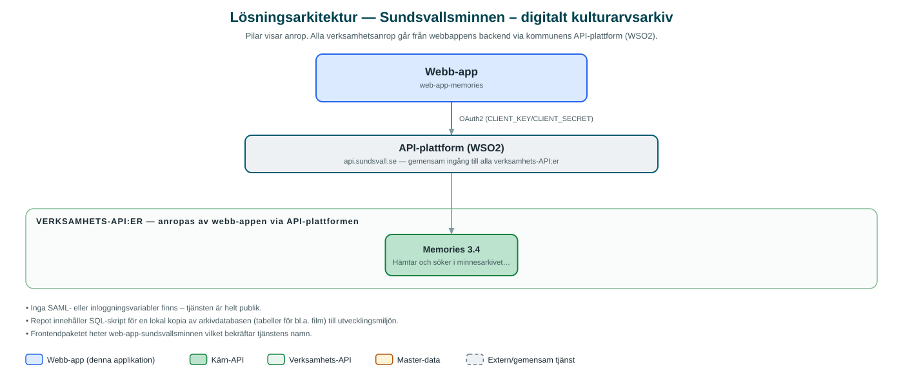

Sundsvallsminnen – digitalt kulturarvsarkiv
Öppet webbgränssnitt för att söka i Sundsvalls minnesarkiv med filmer, fotografier, publikationer, föremål, ljud och texter.
Om applikationen
Sundsvallsminnen är en publik webbplats där invånare och andra intresserade kan söka i kommunens digitala minnesarkiv. Arkivet rymmer olika typer av material – filmer, fotografier, publikationer, föremål, ljudupptagningar och texter – som speglar Sundsvalls historia.
Besökaren kan söka fritt i arkivet, bläddra i träfflistor med förhandsvisningar och öppna enskilda objekt för att se detaljerad information, förhandsgranska materialet och hitta relaterade objekt.
Tjänsten är öppen för alla och kräver ingen inloggning.
Det här stödjer applikationen
- Fritextsökning i arkivet – Sök bland filmer, foton, publikationer, föremål, ljud och texter.
- Galleri med förhandsvisning – Träffar visas i ett galleri med möjlighet att förhandsgranska materialet.
- Detaljerad objektinformation – Varje dokument har en egen sida med metadata som datum, plats och kommentarer.
- Relaterat material – Förslag på relaterade objekt visas i anslutning till det öppnade dokumentet.
Teknisk dokumentation
Nedan beskrivs hur applikationen är uppbyggd, vilka API:er den använder och vad som krävs för att driftsätta den. Informationen är härledd ur källkoden och dess konfiguration på GitHub.
Arkitektur

Applikationen består av en webbaserad frontend (Next.js 15 (App Router), React, sk-web-gui, Tailwind CSS, i18next) och en backend (Node.js, Express, TypeScript (proxy mot Memories-API:t)) som utvecklas i samma kodbas. Verksamhetsanrop går via kommunens gemensamma API-plattform (WSO2) – frontend pratar aldrig direkt med underliggande system. Övriga integrationer som förekommer i koden: WSO2 API-gateway.
Teknikstack
- Frontend: Next.js 15 (App Router), React, sk-web-gui, Tailwind CSS, i18next
- Backend: Node.js, Express, TypeScript (proxy mot Memories-API:t)
- Test: Jest och Cypress med sammanslagen kodtäckning
API-beroenden
Applikationen konsumerar följande API:er via kommunens API-plattform. Versionerna är hämtade ur källkodens API-konfiguration.
| API | Version | Användning |
|---|---|---|
| Memories | 3.4 | Hämtar och söker i minnesarkivets dokument och media. |
Konfiguration och driftsättning
- Backend: .env.example med API_BASE_URL, CLIENT_KEY och CLIENT_SECRET mot WSO2
- Frontend: .env-example samt generering av middleware-miljövariabler vid bygge
- db-init: SQL-skript (MariaDB/MySQL) som skapar och fyller lokal arkivdatabas för utveckling
Noterbart ur källkoden
- Inga SAML- eller inloggningsvariabler finns – tjänsten är helt publik.
- Repot innehåller SQL-skript för en lokal kopia av arkivdatabasen (tabeller för bl.a. film) till utvecklingsmiljön.
- Frontendpaketet heter web-app-sundsvallsminnen vilket bekräftar tjänstens namn.
Källkod
Källkoden är öppen och finns hos Sundsvalls kommun på GitHub. I källkodsförrådet finns även instruktioner för att klona, konfigurera och starta applikationen i egen miljö.